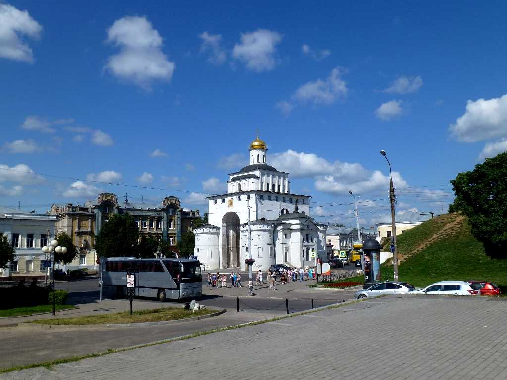
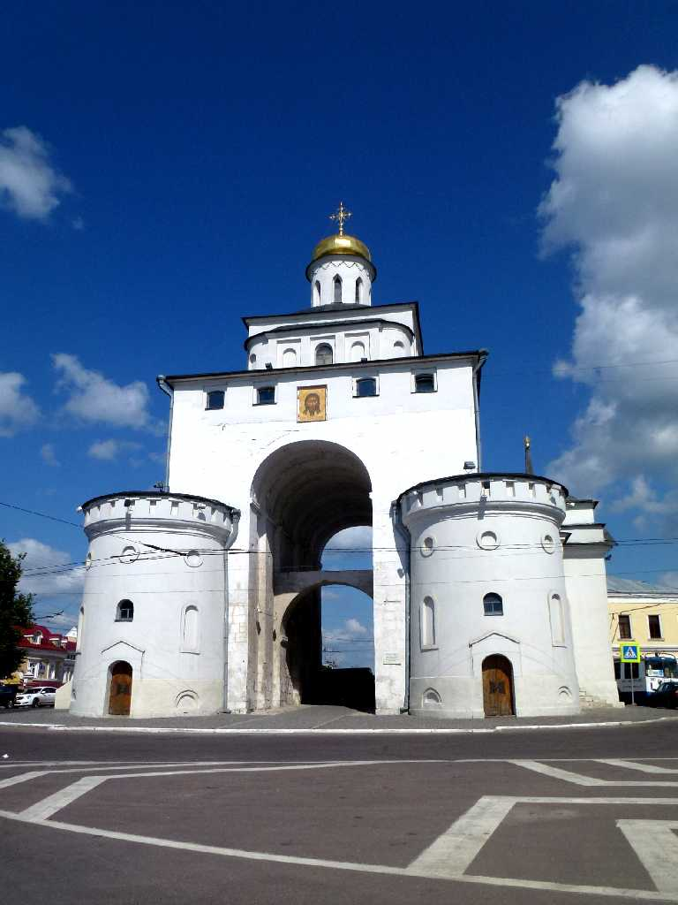
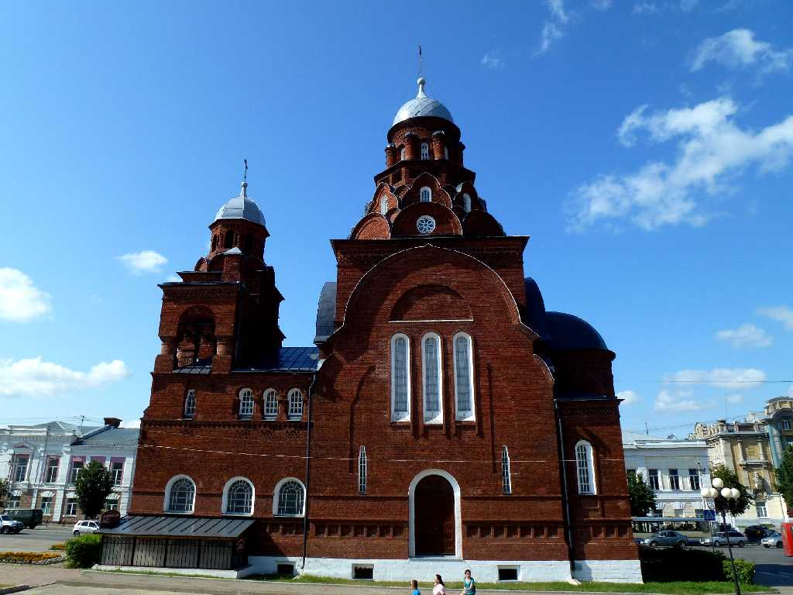
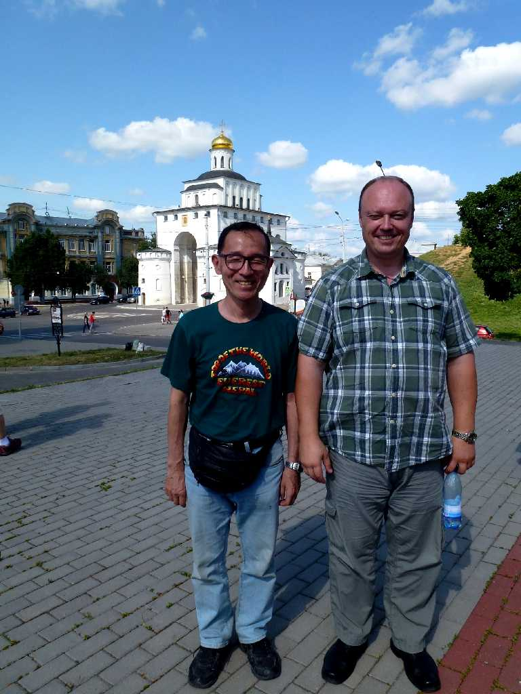
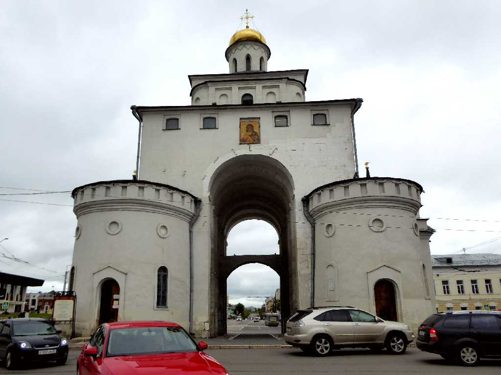
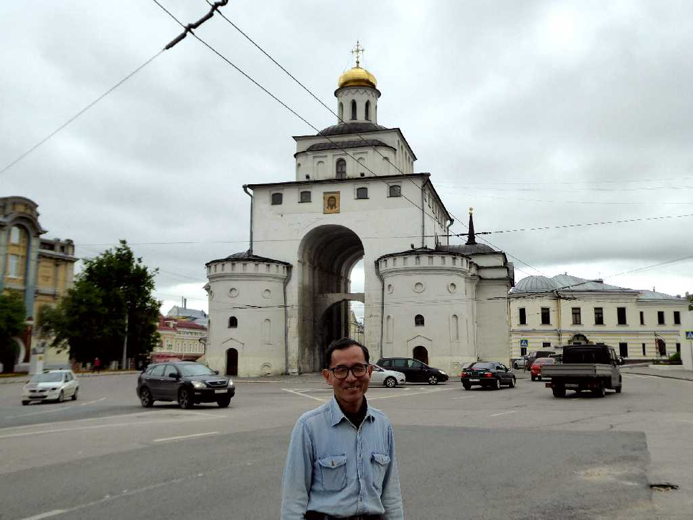

Vladimir
８０日間世界一周鉄道の旅で１５日目 １２世紀に創られた黄金の門はウラジーミルの城門で右に土塁が残っている

Golden Gate Vladimir
昔は黄金で覆われていたので黄金の門と呼ばれている

Troitskaya Church Vladimir
黄金の門から街に入城すると正面に赤の三位一体教会がある

July 8 2013 Vladimir

Golden Gate Vladimir
８０日間世界一周鉄道の旅で訪問以来４年ぶりの再訪問

June 6 2017 Vladimir